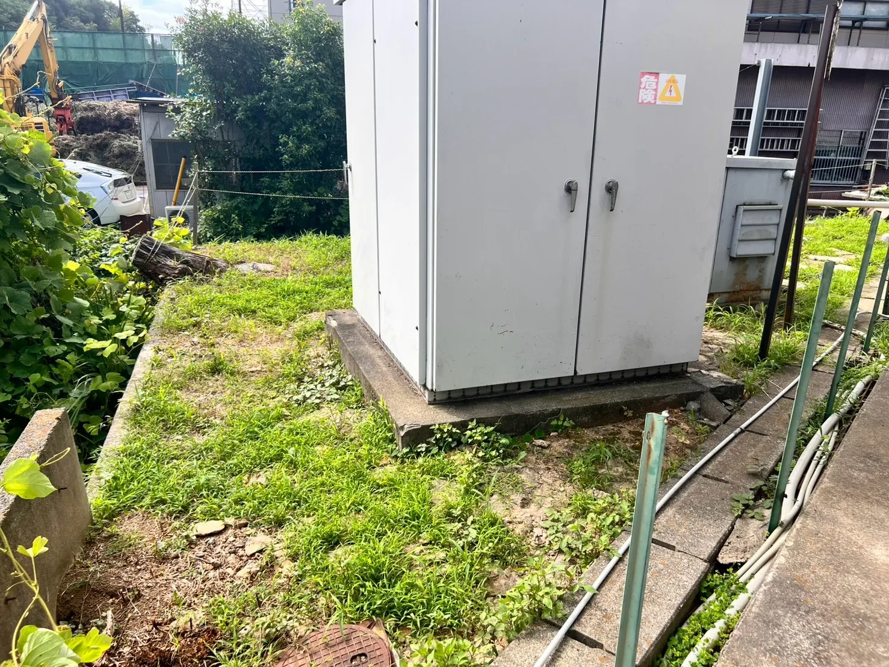
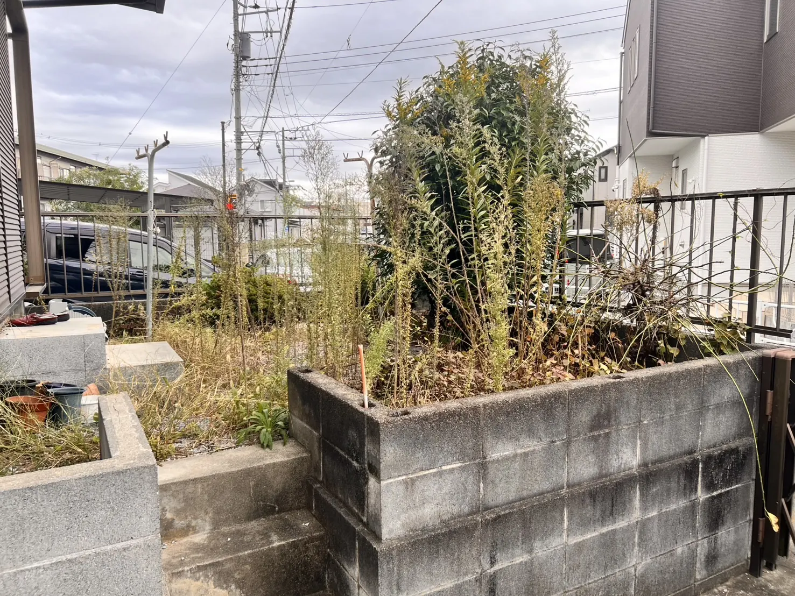
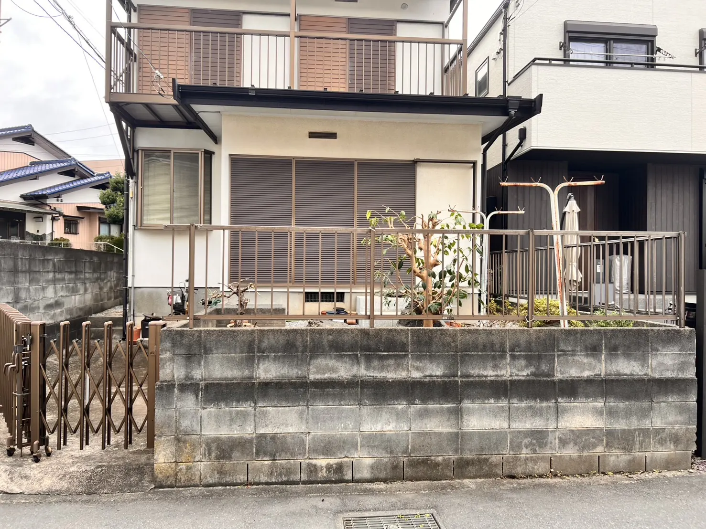
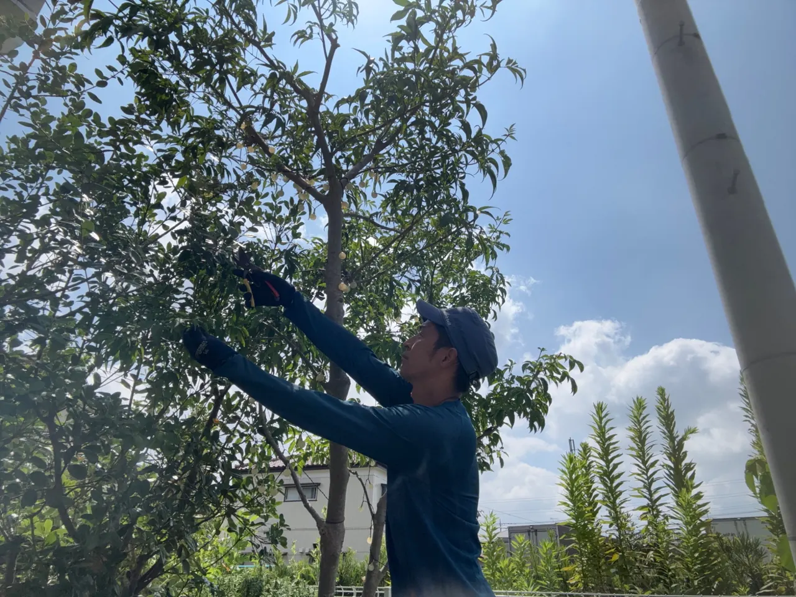

01 / 施設・事業所
このような作業を相談 施設敷地の草刈り・防草シート施工
設備・配管まわりの雑草を整理し、配置に合わせて防草シートを施工。敷地の状態を確認しやすいように整えた事例です。




OUR WORKS / WIZ TREE
一つひとつの現場に、
丁寧な仕事を。
木一本のご相談から、住宅のお庭、施設・敷地の管理まで。実際の施工写真で、作業の様子や施工前後の変化をご覧いただけます。
施工事例を見るPROJECT GALLERY
施工内容で絞り込んでご覧いただけます。写真を選択すると拡大表示できます。
10件の施工事例を表示しています
設備・配管まわりの雑草を整理し、配置に合わせて防草シートを施工。敷地の状態を確認しやすいように整えた事例です。

雑草が生い茂っていた敷地を整理し、広い範囲に防草シートを敷設しました。別角度からの変化もご覧いただけます。


伸びた雑草を刈り取り、地面や敷地の状態が確認できるように整えました。


雑草が広がっていたお庭を整理し、防草シートを敷設。日々のお庭の管理負担を減らすための施工例です。


お庭の整理から防草シートの敷設、人工芝での仕上げまで、工程ごとの様子を紹介します。


マット状の資材を敷いた状態から、化粧砂利で仕上げたお庭の施工例です。


伸びた草木を整理し、庭木を剪定。お庭や建物まわりの見通しを整えた施工事例です。




住宅に近い場所の庭木を剪定。２組の施工前後写真で樹形の変化をご覧いただけます。


住宅に近接する高木の枝おろし。樹上での作業中の様子と、作業後の敷地をご紹介します。


職人が枝葉の状態を確認しながら作業する様子です。仕上がりだけでなく、実際の作業風景もご覧ください。

※ 写真は実際の施工事例・作業風景です。敷地の所在地や依頼主が特定される情報は掲載していません。作業内容・仕上がりは現場条件により異なります。掲載している住宅の施工事例は、法人管理物件の契約実績を示すものではありません。
FOR BUSINESS
草刈り・剪定・防草対策など、必要な作業を組み合わせた管理をご提案します。
CONTACT
お庭の小さなお困りごとから、施設の継続管理まで。お見積もり・お問い合わせはフォームまたはお電話で。